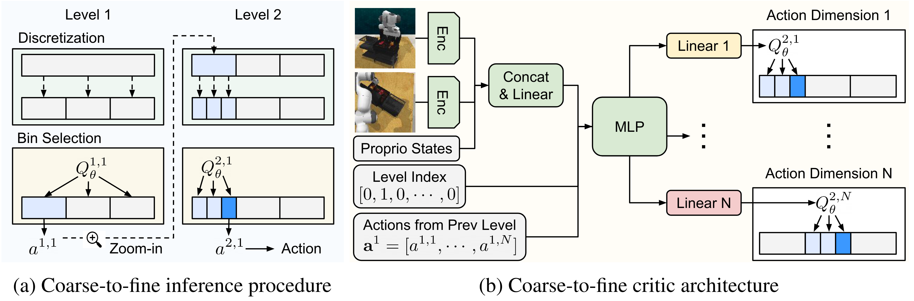

Despite recent advances in improving the sample-efficiency of reinforcement learning (RL) algorithms, designing an RL algorithm that can be practically deployed in real-world environments remains a challenge. In this paper, we present Coarse-to-fine Reinforcement Learning (CRL), a framework that trains RL agents to zoom-into a continuous action space in a coarse-to-fine manner, enabling the use of stable, sample-efficient value-based RL algorithms for fine-grained continuous control tasks. Our key idea is to train agents that output actions by iterating the procedure of (i) discretizing the continuous action space into multiple intervals and (ii) selecting the interval with the highest Q-value to further discretize at the next level. We then introduce a concrete, value-based algorithm within the CRL framework called Coarse-to-fine Q-Network (CQN). Our experiments demonstrate that CQN significantly outperforms RL and behavior cloning baselines on 20 sparsely-rewarded RLBench manipulation tasks with a modest number of environment interactions and expert demonstrations. We also show that CQN robustly learns to solve real-world manipulation tasks within a few minutes of online training.
We present Coarse-to-fine Reinforcement Learning (CRL), a new RL framework that enables the use of value-based RL algorithms for fine-grained continuous control. Our key idea is to train RL agents to zoom-into the continuous action space in a coarse-to-fine manner by repeating the procedure of (i) discretizing the continuous action space into multiple intervals and (ii) selecting the interval with the highest Q-value to further discretize at the next level.
Within the CRL framework, we introduce concrete, value-based RL algorithm, namely Coarse-to-fine Q-Network (CQN), that implements a coarse-to-fine critic architecture to take input features along with one-hot level indices and actions from the previous level, and then outputs Q-values for different action dimensions. This design enables the critic to know the current level and which part of the continuous action space to zoom-into.
With a pre-defined number of levels (L) and intervals (B), e.g., L = 3 and B = 3 in this example, we apply discretization to the continuous action space L times with different precisions. We then design our RL agents to learn a critic network with only a few actions at each level, e.g., 3 actions in this example, conditioned on previous level's actions. This enables us to learn discrete policies that can output high-precision actions while avoiding the difficulty of learning the critic network with a large number of discrete actions.
CQN efficiently learns to solve target tasks within 10 minutes of online training. These results are without pre-training, motion planning, keypoint extraction, camera calibration, depth, and hand-designed rewards.